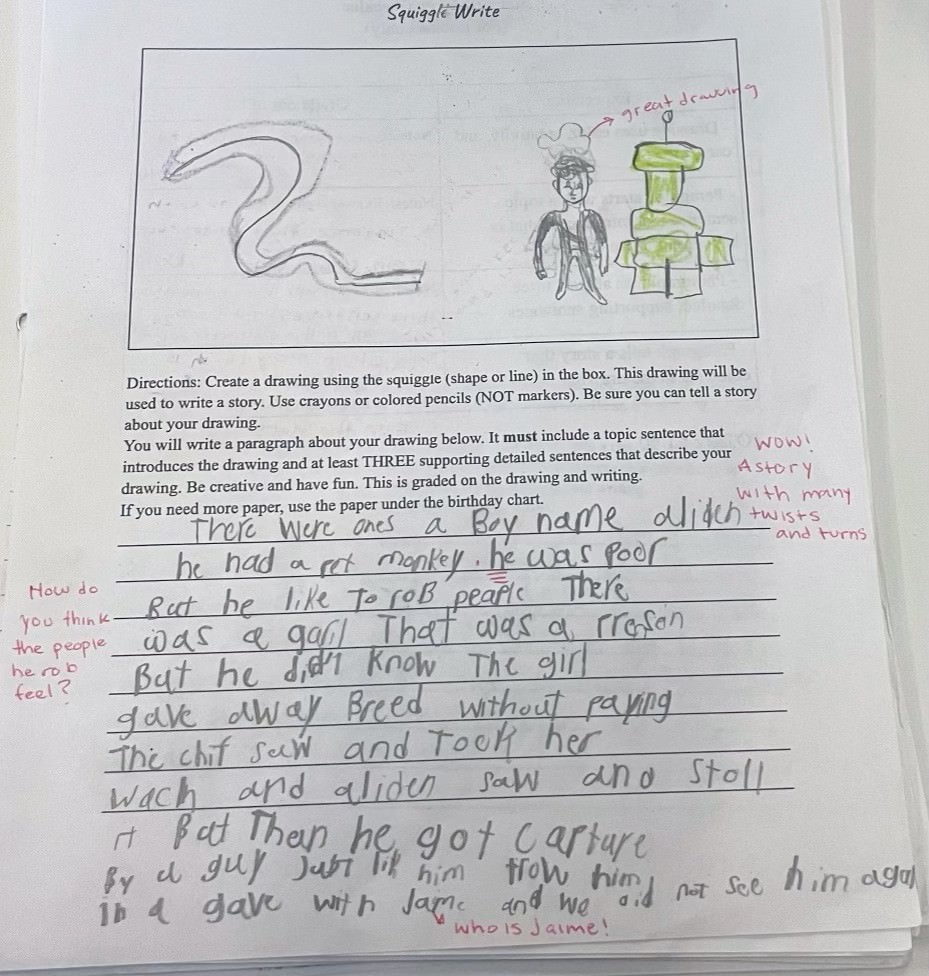
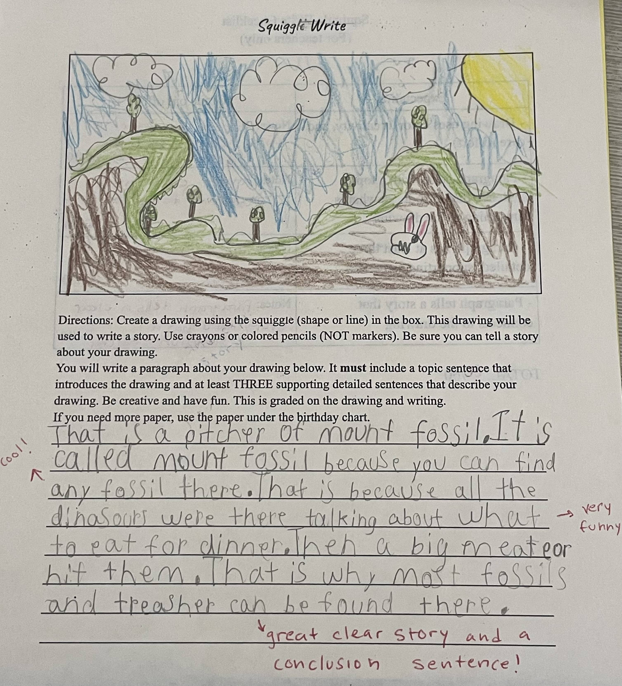
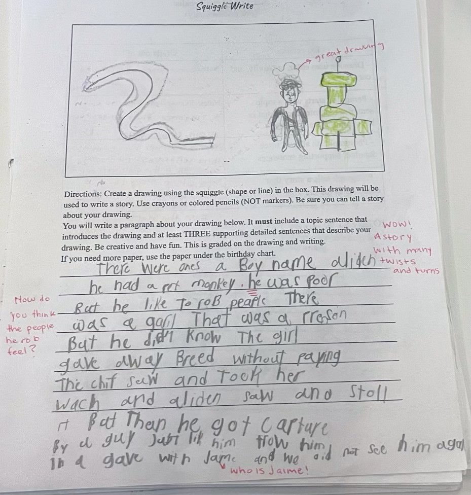
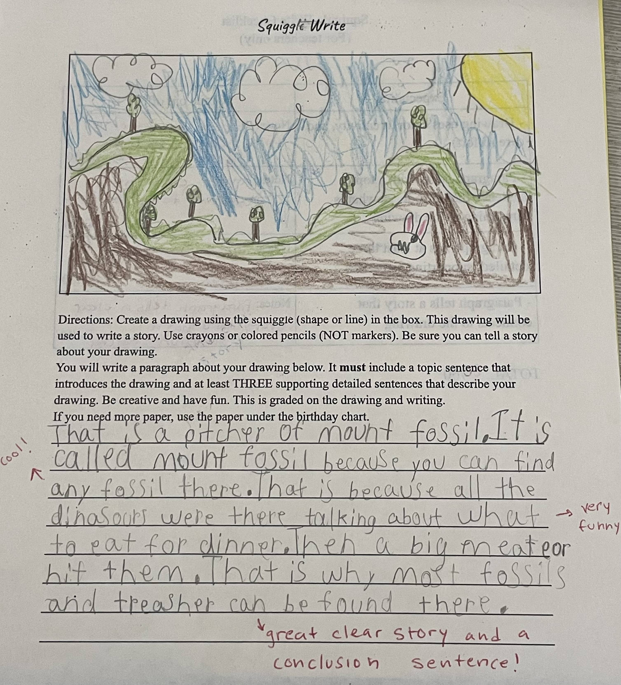

Throughout the day, students engage in coursework following whole group instruction. Independent classwork serves as a gauge for both me and my guiding teacher to assess our student's grasp of new concepts. Often students have multiple days to complete their classwork and receive feedback before turning in their work. Classwork is often graded as a way to hold students accountable for finishing their work promptly. Classwork provides students with feedback on their learning, clarifying for them what they understand, what they don’t understand, and where they can improve. Grading classwork also provides feedback to us, instructors on students’ learning, that can inform future lessons and pacing.
Given that grades evaluate student work, it's crucial that they accurately reflect the quality of the student's efforts and are graded fairly. To mitigate biases, rubrics are often used and explicit instruction must be given to students.
In my classroom at Clinton Elementary, students often completed similar classwork assignments each week. One of the assignments my students complete is a weekly “squiggle write.” A squiggle write consists of a box that has a squiggle line drawing that will be the start of the student’s illustration. Students receive a checklist outlining the essential components necessary for their written story based on their completed drawing.
Their narrative must include a topic sentence that pulls the reader in with interesting word choice and relates to the picture they produced. In their paragraph, there must be at least 3 supporting, detailed sentences that create a story with a beginning, middle, and end. Students are expected to use proper punctuation, spelling, and grammar.
Through this assignment, I can distinctly see the improvement in my student's writing from week to week. When the squiggle write was given to students for the first time, many wrote stories that lacked detail and often did not relate to the image they created. They moaned and groaned through the writing process.
Students’ attitudes seemed to become more positive as we shared their finished work with the class. Students wanted their work to be praised and shared. Therefore, they were more receptive to teacher correction and feedback from their peers when their work was shared with the group.
The second squiggle write students completed was met with excitement at another chance to do well on an assignment. Students were eager to share their work and wrote stories that exceeded the three supporting sentence minimum. One of my students, by the third squiggle write, enthusiastically wrote an elaborate three-page story to go along with their squiggle illustration. Witnessing this growth in writing skills, alongside their enthusiasm for sharing work and openness to feedback, fills me with immense pride.
 


